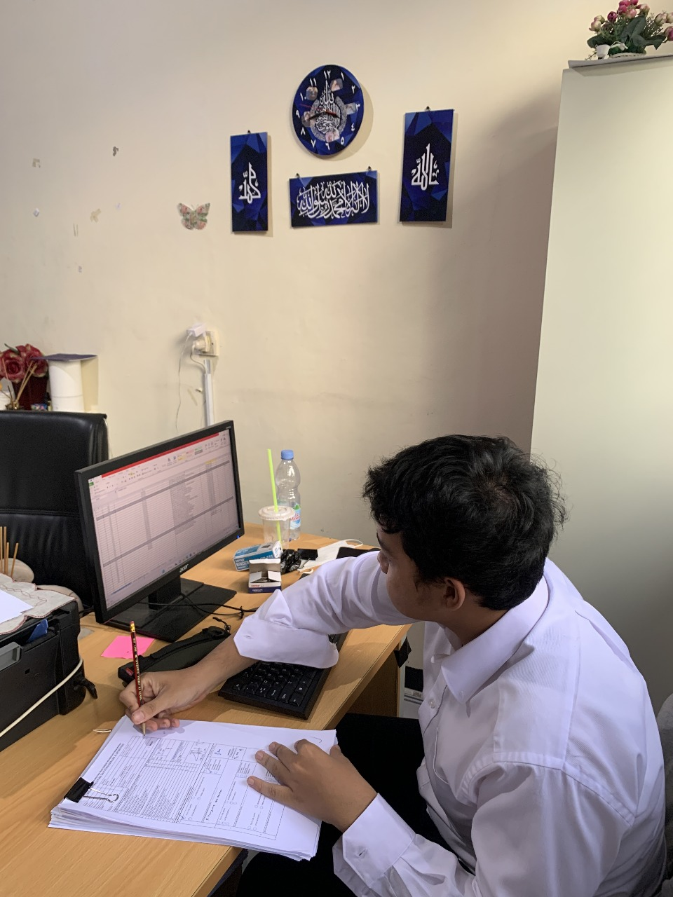
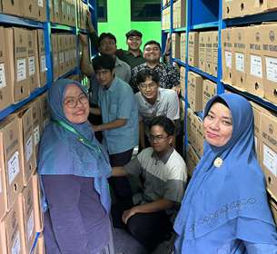

Tentang Saya
Saya adalah mahasiswa Manajemen Rekod dan Arsip Universitas Indonesia yang fokus dalam pengelolaan dokumen dan administrasi berbasis digital. Saya memiliki minat dalam menciptakan solusi inovatif untuk tantangan manajemen informasi dan arsip.

Biodata
Nama:Aditya Raafi Yudhatama
Tempat, Tanggal Lahir:Jakarta, 15 Juli 2004
Alamat:Jl. Swadaya Gudang Baru, DKI Jakarta
Email:raafiyudhatamaaditya@gmail.com
Telepon:0813-1695-9381
Pendidikan:D4 Manajemen Rekod dan Arsip - Universitas Indonesia
Portofolio

Arsiparis
Badan Pendapatan Daerah
Peberkasan Arsip Aktif Setoran Massa Untuk Unit Pelayanan dan Pemungutan Pajak daerah Kecamatan Pasar Minggu.
2023
Manajemen Perkantoran
Kementerian Perindustrian
Membantu pengadministrasian tim kerja 2 subdirektorat kimia hulu - Anorganik
2024

Arsiparis
Kementerian Lingkungan Hidup dan Kehuatanan
Melakukan penataan arsip vital inaktif surat keputusan menteri lingkungan hidup dan Kehuatanan
2024